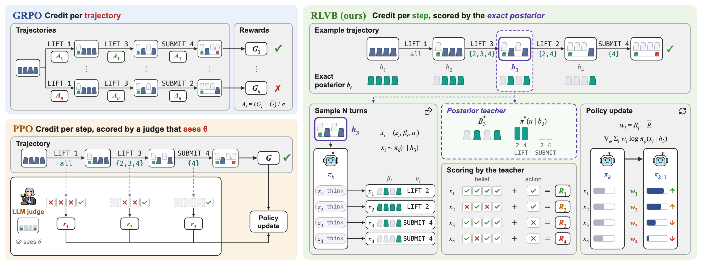

Watch the agents play
Pick a game and a method, then press play. ← → step, space plays.
All eight methods, side by side
How it works

BibTeX
@article{rlvb2026,
title = {RLVB: Turning Agents from Lazy Guessers into Evidence Seekers
with Verifiable Beliefs as Process Rewards},
author = {Richmond Sin Jing Xuan and Peilin Feng and Wenbin Wang and Soujanya Poria},
journal = {arXiv preprint},
year = {2026}
}